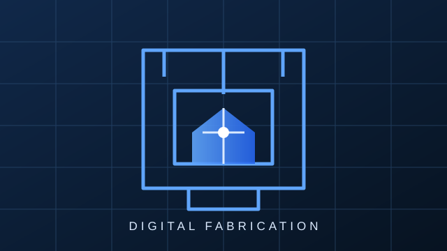

01 ناقش طلب الخدمة ↗
التصنيع الرقمي والطباعة ثلاثية الأبعاد
تصميم ونمذجة وتصنيع الأجزاء والنماذج الأولية.
- الطباعة ثلاثية الأبعاد
- التصميم والنمذجة الهندسية وتجهيز ملفات التصنيع
- النقش والقطع بالليزر وتخصيص المنتجات
- تصميم وبناء النماذج الأولية
- لحام المعادن والأعمال المعدنية والورش
تفاصيل إضافية
تحويل الفكرة إلى نموذج رقمي وتجهيزه للتصنيع.